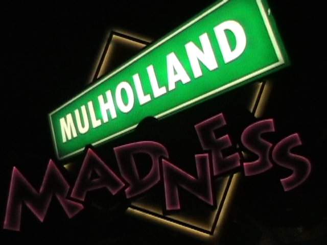

Disneyland Xmas 2009
Ok, so we decided to head on down to the Disneyland Resort for a night around Christmas Time with my cousin. Stupid Idea considering Disneyland reached F*CKING MAXIMUM CAPACITY TODAY!!!!!!! Anyways, the people in the parking lot gave us this Christmas Card from Mickey Mouse.
This update is proudly sponsered by Christmas Jr. Mints. Because the regular ones just arn't good enough during the holidays.
Better head on over to Disneyland soon before it reaches MAXIMUM CAPACITY!!!!!!!!!
 And how else do you start a Christmas Update than by getting ejector air?
And how else do you start a Christmas Update than by getting ejector air?
All right!! Dinner is served!
I don't need Pizza or Burgers or any of that fancy shmancy stuff from Storytellers. All I need is a fresh hot tortilla, and I'm satisfied.
"I weigh 800 Tortillas!!!!? Damn!!! Ok, in 2010, I'm hitting the gym every single day and getting back into shape!!!"
Awesome news on California Adventure's Makeover!!! The water is back in the lake!!!!
California Screamin at sunset.
 I'm definetly starting to like the new screamshield on California Screamin more and more.
I'm definetly starting to like the new screamshield on California Screamin more and more.
"Hello. My name is Allie and I'm not happy about Disneyland reaching Maxiumum Capacity. I'm unhappier than the Grinch himself. Gimme some walking space!!!!"
 California needs a coaster with ejector air BADLY!!!!
California needs a coaster with ejector air BADLY!!!!
In other news, World of Color is now testing!!!
The Mickey Wheel looks trippy at night!!

I'm actually able to ride Mullholland Madness because of the fact that it has a single riders line. More parks should add single rider lines, or at least not remove them when they have them. *Cough* Six Flags Magic Mtn *Cough*
From Mullholland Madness, we are now able to see that Paradise Pier looks nice.
Why am I filming right now? There are WAY WAY WAY TOO MANY PEOPLE around to be filming!!! Now I started a SUPER Final Destination 3 on Steroids!!!! (Oh, and this is Maximum Capacity Disneyland in case you didn't know.)
I made it through the sea of crowds and am now at the Castle.
"I see you."
"For Christmas, I'm giving you MAXIMUM CAPACITY CROWDS!!!!!" *Evil Laugh*
 Ok. Even though Disneyland was experiencing MAXIMUM CAPACITY CROWDS, Splash Mtn was a walkon!!! We even got to stay in our log!!! (Though it was probably because it was 50 degrees at night and Fantasmic was going.)
Ok. Even though Disneyland was experiencing MAXIMUM CAPACITY CROWDS, Splash Mtn was a walkon!!! We even got to stay in our log!!! (Though it was probably because it was 50 degrees at night and Fantasmic was going.)
*Sigh* If it'll get me away from the Maximum Capacity Crowds...
We at Incrediblecoasters hope you have Happy Holidays. Because Sad Holidays really suck.
Yes. It will soon be 2010.
Reindeer on a stick! My favorite!!!
Well since it was an hour from Closing Time, we just decided to suck it up and wait out Space Mtn.
Ok. In our picture, Allie and Celeste are falling asleep because it's past their bedtime, Torin is suffering from Maximum Capacity Syndrome, I'm asking myself "Will Time Travel exist in the year 3000?", and Amy is wishing it was still Ghost Galaxy Space Mtn.
While our Christmas Visit in 2006 was much better, it was still a fun day at the Disneyland Resort.
Home